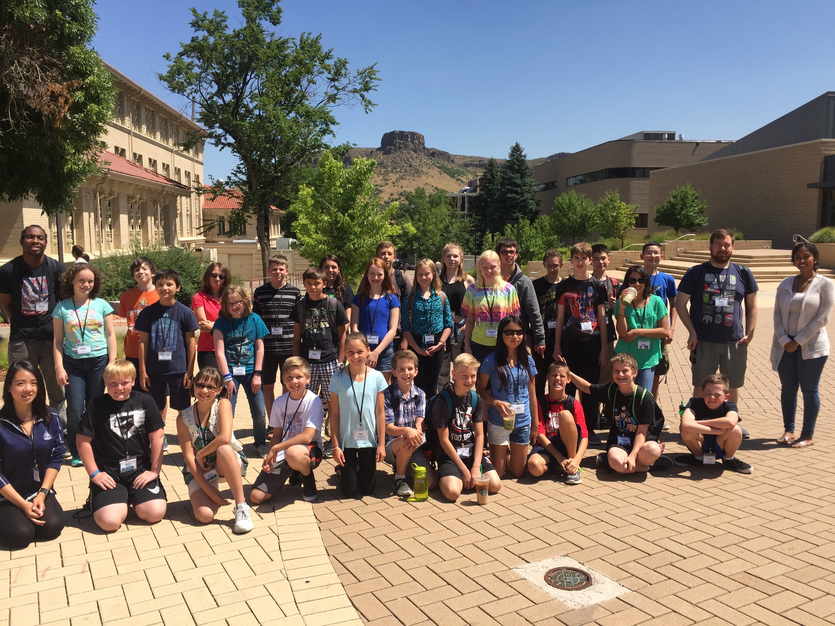

2021 Summer Camp
We are pleased to be able to offer both virtual summer sessions and in-person camps with CS@Mines for Summer 2021, for girls and boys entering 3rd - 10th grade.
Camps are developed and hosted by Colorado School of Mines Computer Science students (CS@Mines) who are passionate about STEM learning, enjoy working with kids, and are excellent role models!
NOTE: We will be adhering to state guidelines and School of Mines guidelines regarding safety and the coronavirus.
| Dates | Times | Price | Grade(s) | Program | Virtual or In-person |
|---|---|---|---|---|---|
| June 7-10 | 10:00am-12:00pm MT | $80 | 7th-10th virtual Computer Science session: | Option 1: Python for Beginners Option 2: Python for Data Science | VIRTUAL |
| June 14-17 | 10:00am-11:00am MT | $50 | 3rd/4th | STEM in Everyday Life | VIRTUAL |
| June 14-17 | 1:00pm-2:00pm MT | $50 | 5th/6th | Environ - mental Geo- science | VIRTUAL |
| July 19-23 | 9:00am-3:30pm MT | $400 | 7th-10th, Female identtifying participants only | Exploring Sensor Systems | IN-PERSON |
| August 2-6 | 9:00am-3:30pm MT | $400 | 7th-10th, All genders | Exploring Sensor Systems | IN-PERSON |
Summer Camp(s) Details:
VIRTUAL CAMPS
3rd/4th Grade:
June 14 - June 17, 2021 (Monday - Thursday) - VIRTUAL / ONLINE ONLY
Topic: STEM in Everyday Life
- Virtual camp
- All Genders
- 10:00am - 11:00am MT (1 hour/day) via Zoom, plus suggested self-guided work to apply what you've learned
- Cost: $50*
Campers will learn about how science, technology, engineering and math touches our everyday lives in ways we may not always realize. We'll discuss STEM innovations that have improved our lives in areas like medicine and the environment, discover online resources, and do hands-on activities related to that day's area of interest.
REGISTER
5th/6th Grade:
June 14 - June 17, 2021 (Monday - Thursday) - VIRTUAL / ONLINE ONLY
Topic: Environmental Geoscience
- Virtual camp
- All Genders
- 1:00pm - 2:00pm MT (1 hour/day) via Zoom, plus suggested self-guided work to apply what you've learned
- Cost: $50*
Campers will learn about what a geoscientist does, and how that work relates to the water we rely on every day. They will explore its relation to the earth and environment and do hands-on activities with water and materials they can find outside.
REGISTER
7th - 10th Grade:
June 7 - June 10, 2021 (Monday - Thursday) - VIRTUAL / ONLINE ONLY
Option #1: Python for Beginners
- Virtual camp
- All Genders
- 10:00am - 12:00pm MT (2 hours/day) via Zoom, plus suggested self-guided work to apply what you've learned
- Cost: $80*
Python for Beginners - Participants will design, develop, test, troubleshoot, and present their own game of Hangman in this Python for Beginners session! Instructors will lead small Zoom lessons during which participants will be introduced to beginning Python skills (data types, conditionals, and looping) and then have the opportunity to apply their new skills by developing short programs throughout the session.
REGISTER
Option #2: Python for Data Science
- Virtual camp
- All Genders
- 10:00am - 12:00pm MT (2 hours/day) via Zoom, plus suggested self-guided work to apply what you've learned
- Cost: $80*
Python for Data Science is for participants who have worked with Python before, and understand the basic concepts, but otherwise don’t need to be advanced -- just the next level from beginners. What is the most popular movie of all time? Are more expensive restaurants really better? What is attracting students to one school over another? The process of learning from data is called Data Science, which is used to answer questions like these. Campers will form their own questions about the world around them, learn to analyze data using different methods, and then learn how to use Python programming to better understand what the data might be telling them! CS@Mines students will lead small group Zoom lessons each morning. Each afternoon, campers can apply their knowledge by working through self-guided activities and projects -- calling on their instructors during ‘office hours’ in Zoom for help.
REGISTER
IN-PERSON CAMPS
7th-10th Grade:
July 19 - July 23, 2021 (Monday - Friday) - Female-identifying students only
OR:
August 2 - August 6, 2021 (Monday - Friday) - all genders
Topic: Exploring Sensor Systems
- In-person camp, School of Mines campus, Golden CO
- 9:00am - 3:30pm MT
- Cost: $400*
- Includes: lunch every day at Mines Market, a programming kit to take home, a t-shirt, and fun ‘unplugged’ activities and outdoor time to round out the day.
Explore the foundation of Sensor Systems!
Have you ever wondered how things are embedded with sensors, software and other technologies – that can be controlled with a phone? How does a “smart home” work? Participants will gain an understanding of sensor systems, by learning about and forming connections between software and hardware using an Arduino - a physical programmable circuit board! They will learn the foundations of connecting a microprocessor to buttons, LEDs, motors, speakers, GPS units, cameras, the internet, and even your smart-phone or your TV. Participants will use their creativity to develop their own creations, and these foundations will help your child better understand robotics concepts and general entrepreneurship in the tech world!